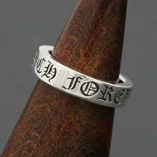

My Favorite Fashion Items
패션은 나에게 자기 표현의 한 방식이다. 아래는 내가 가장 좋아하고 애착을 가지는 세 가지 패션 아이템에 대한 이야기다.
1. Nike x Tom Sachs Mars Yard Shoe 2.0

이미지 출처: hypebeast
과학과 예술이 만난 실험적 스니커즈
이 신발은 단순한 운동화를 넘어서, 과학자와 예술가가 만든 하나의 실험적인 결과물이라고 생각한다. Tom Sachs는 NASA와 우주 탐사를 모티브로 삼아 기능성과 철학을 동시에 담아냈다.
나는 이 제품을 처음 봤을 때 '진짜 운동화를 예술처럼 만들 수 있구나'라는 생각을 했고, 단순한 하이프 제품이 아니라 실험정신이 묻어나는 결과물이라는 점에서 매력을 느꼈다. 자연스럽게 낡는 소재, 때가 묻을수록 멋져지는 나일론과 스웨이드 조합은 실용성과 미학의 균형을 보여준다.
희소성과 리셀가를 떠나, ‘왜 이 디자인이 만들어졌는가’를 생각하게 해주는 철학적인 신발이라서 가장 좋아하는 아이템 중 하나다.
2. Chrome Hearts Forever Ring
이미지 출처: gem
작지만 강한 존재감의 반지
크롬하츠의 포에버 링은 내가 처음으로 '나를 표현할 수 있는 반지'를 찾고 싶다고 느꼈을 때 만난 아이템이다. 일반적인 패션 반지와는 다르게, 이 반지는 무게감이 있고 깊이가 있다.
심플하지만 크롬하츠의 고딕 문양과 레터링이 새겨진 두툼한 실버는 존재감을 뿜어내면서도 과하지 않다. 디자인만큼이나 브랜드 철학도 좋아한다. 수작업 제작, 정체성의 고수, 마케팅 없는 확산. 이 반지 하나에 그런 모든 배경이 담겨있다고 느낀다.
무엇보다 내가 이 반지를 착용하는 이유는, 단순한 멋을 넘어서 ‘꾸밈 없는 나의 감각’을 표현하기에 충분하다고 믿기 때문이다.
3. Chrome Hearts Jeans

이미지 출처: stockx
스타일과 상징성을 동시에 담은 데님
크롬하츠 진은 가격도 높고 유통도 제한적이지만, 딱 한 번 입어봤을 때의 감각은 잊을 수 없었다. 뒷주머니의 십자가 가죽 인레이, 무거운 실버 리벳, 완벽하게 잡히는 핏까지—모든 것이 ‘완성형’ 같았다.
요란하지 않으면서도 확실한 개성을 드러낼 수 있는 아이템이고, 입는 순간 크롬하츠의 세계관에 들어선 느낌이 든다. 단순히 비싼 바지가 아니라 ‘취향을 증명하는 수단’처럼 느껴졌다.
브랜드의 상징성과 나만의 개성이 맞닿는 지점에 있는 아이템이라, 나에게 있어 가장 소중한 패션 아이템 중 하나로 남아있다.
수업을 마치며
22257035 양영비
디지털 프로그래밍 수업을 통해 HTML과 CSS의 구조를 보다 명확하게 이해할 수 있었고, 디자인 감각을 웹 상에서 구현하는 방법을 배울 수 있어 유익한 시간이었다. 직접 내 취향을 바탕으로 코딩해보는 활동이 특히 흥미로웠고, 앞으로 포트폴리오 작업에도 도움이 될 것 같다.
© 2025 My Fashion Story. 이미지 출처: GitHub 개인 업로드